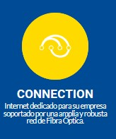
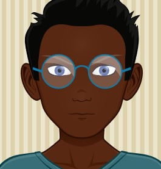

Connection
Lleva un paso más allá a tu empresa con nuestra poderosa conexión de internet

Security
Asegura tu red y protege los activos de información.
¿Realmente Tesla vale medio billón de dólares? (la cifra que hizo de Elon Musk el segundo hombre más rico del mundo)
26/11/2020 El podcast Tech Tent de la BBC, especializado en tecnología, respondió por qué los inversores creen que la compañía de automóviles eléctricos vale ahora más que hace un año.

Apple vs Facebook: de dónde viene la intrigante mala relación entre las dos compañías tecnológicas
26/11/2020 Las grandes rivalidades corporativas, como las de Coca-Cola con Pepsi, Boeing y Airbus o las hamburguesas McDonald's contra las Burger King, suelen tener un elemento en común: la disputa por un mismo negocio.

"La degradación humana causada por la tecnología ha sobrepasado algunos límites importantes"
26/11/2020 A medida que las empresas compiten por captar nuestra atención, ciertas capacidades se ven mermadas. Es lo que el tecnólogo Randy Fernando llama "degradación humana".
Covid-19: el sistema de códigos QR que China propone usar a nivel global para contener el coronavirus (y por qué causa polémica)
25/11/2020 Así llama el presidente de China Xi Jinping a un sistema de monitoreo mundial que usaría códigos QR (Quick Response, en inglés, "código de respuesta rápida", en español) con el propósito de restituir la movilidad de pasajeros en los viajes internacionales, en medio de la pandemia del covid-19.

Germán Ruiz
Estudiante de Matemáticas y Estadística de la Universidad del Tolima y apasionado por el conocimiento. Sus pasatiempos se destacan en leer, tocar guitarra, escuchar música y aprender cosas nuevas.
José Romero
Lic. en matemáticas de la UPN, apasionado por la implementación de y creación de apletts o manipulables

John López
Ingeniero electrónico con énfasis en buenas prácticas de gestión de servicios y gestión de proyectos